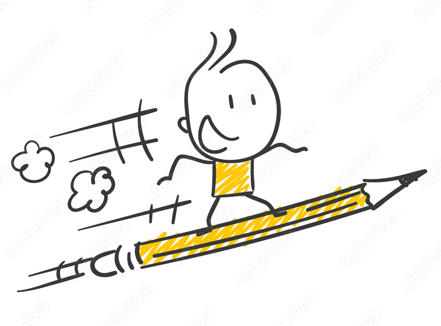
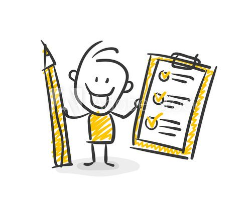
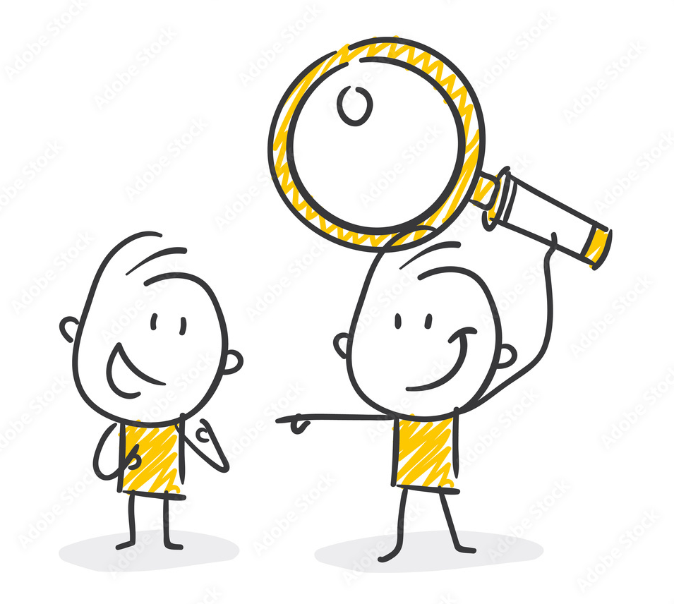

Выбери над чем хочешь поработать:
📋 Написать баг-репорт

Bug report (отчёт об ошибке) — это сообщение о том, что в программе, игре или приложении что‑то работает неправильно.
Например:
- ✓ кнопка не нажимается;
- ✓ картинка не загружается;
- ✓ игра зависает.
Для чего нужен: Чтобы разработчики увидели проблему и исправили её — тогда программа станет работать лучше.
📝 Составить чек-лист

Checklist (чек‑лист) — это список дел или шагов, которые нужно сделать. Рядом с каждым пунктом — место для галочки: поставил галочку, когда выполнил задание.
Например:
- ✓ список покупок в магазине;
- ✓ план подготовки к контрольной;
- ✓ шаги для сборки конструктора.
Для чего нужен: чтобы ничего не забыть; следить, какие тесты выполнены, а какие — ещё нет; делать всё по порядку и не путаться.
✅ Написать тест-кейс
Tes-case (Тест‑кейс) — это пошаговая инструкция, чтобы проверить, правильно ли работает программа или игра.
Например:
- 1) Запусти игру.
- 2) Нажми кнопку «Новый уровень».
- 3) Ожидание: откроется экран с новым уровнем, без зависаний.
Для чего нужен: Чтобы не пропустить ошибки — проверить каждую кнопочку и функцию, даже если тестирует другой человек и быстро понять, где проблема, если что‑то работает не так.
🐞 Найти баг в JavaScript

Поиск багов — это процесс обнаружения ошибок, дефектов или проблем в продукте.
Задай себе вопросы:
- • Что здесь может работать не так?
- • Как тут должно быть на самом деле?
- • Какая здесь логика?
Для чего нужно: Если не просто искать баги в UI, а покапаться в в логике - то получается очень хороший мостик между QA и JavaScript.